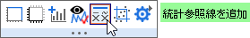
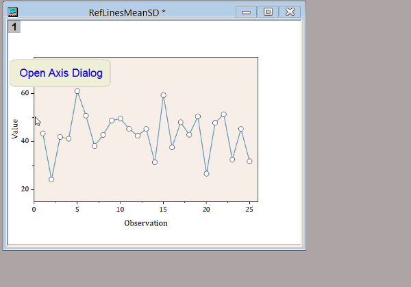

FAQ-621 グラフ内の指定したXあるいはYの位置に直線を追加するには？
add-straight-line
最終更新日：2020/4/1
直線ツール  を使用してグラフに線を引くだけでなく、軸の特定の位置でグラフに縦線または横線を追加する方法がいくつかあります。
を使用してグラフに線を引くだけでなく、軸の特定の位置でグラフに縦線または横線を追加する方法がいくつかあります。
- グラフウィンドウがアクティブな状態で、メニューから挿入：直線を追加を選択し、addlineダイアログを開きます。このダイアログで、位置の値に、X（タイプ=水平）またはYの値（タイプ=垂直）を入力します。線のフォーマットとラベル付けのオプションがあります。
- グラフのXまたはY軸をダブルクリックして、軸ダイアログボックスを開きます。グリッド線タブを開き、追加の線の項目のYまたはX編集ボックスに値を入力します。
- グラフレイヤ内部をクリックして、レイヤを選択してレイヤレベルのミニツールバーを表示します。統計参照線を追加ボタンをクリックして、表示されたメニューの統計値に基づいた線を追加するか、詳細をクリックして参照線ダイアログを開きます（ダイアログについては次の項目を参照）。
- 
- XまたはY軸をダブルクリックして、軸ダイアログボックスを開きます。参照線タブを開き、線（軸の値）を表示する軸値または統計値（Origin 2018以降）を入力します。オプションで、ラベルの表示やラベルテキストの選択が可能です。
- 
キーワード:参照線, 垂直線, 水平線